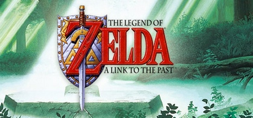

The Legend of Zelda: A Link To The Past is a historic game that can be talked about and noted for many different great reasons. The one I’m going to be talking about today is it’s open world design.
While the original Legend Of Zela created a world in which any dungeon can be done in just about any order, A Link To the Past while not abandoning those ideas completely instead decides to focus on a more catered experience. The map here is a good example of this with many areas being blocked off by rocks or altitude or areas that you need to find a way to sneak past. While there is a more structured map here a Link To The Past still feels fairly open. Each area is fairly distinct, and while being a much larger map it’s always pretty easy to tell where you are.

This is because of landmarking. A link to the past map is dominated by Hyrule Castle which is placed smack dab in the centre of the map, and while the map 2D map would be large enough each biome is placed around Hyrule Castle like that of a clock, if you are trying to get from one area to another you will always be passing by or adjacent to Hyrule Castle. While sometimes this can be seen as an obstacle it’s something that you will always have to keep note of. Traversing the map like a clock.
I think landmarks are the most important thing to make note of when building a gameworld or even open levels. While getting lost while exploring new areas is always fun, having a guidemark to ground yourself and find your way back is also very important in gaming. This will always come down to the mechanics of your game, while this is important in something like an open world game it will matter much less in a roguelike. Even so, making distinct areas and landmarks within them not only makes gameworlds more traversable, but also more fun to explore.

In the game drone delivery I was tasked with making a small open world map. Despite the fact the world was small enough that you could see the entire world from every angle I decided to make a world with three unique locations using my limited assets. The starting area which used houses and more modern buildings and a downtown area with some larger buildings and no houses. Doing this made every part of the world feel unique and made traversing the world just that little bit more interesting.